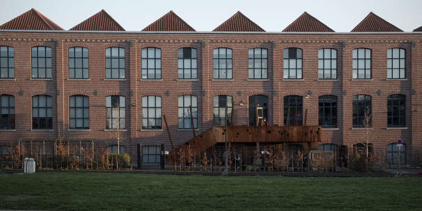

HISTORIQUE
La societé Ankama a ete crée en 2001 par les trois fondateurs Anthony Roux, Camille Chafer et Emmanuel Darras. C’est une entreprise tres connue dans le monde vidéoludique et qui genèrent beaucoup de recettes : en 2017 le chiffre d'affaires de la société a été de 5 771 500 €.
Leur succès est dû en grande majorité au phénomène qu’a été DOFUS à sa sortie (3 millions de téléchargements à sa sortie et 85 millions à l’heure actuelle).
LOCALISATION ET EFFECTIFS
L’entreprise Ankama se situe à Roubaix dans le nord de la France, compte actuellement environ 500 salaries et dans toutes ses branches comme Ankama Edition et Ankama Animations
